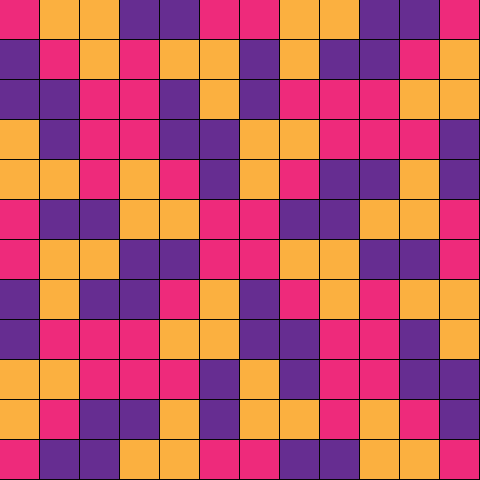
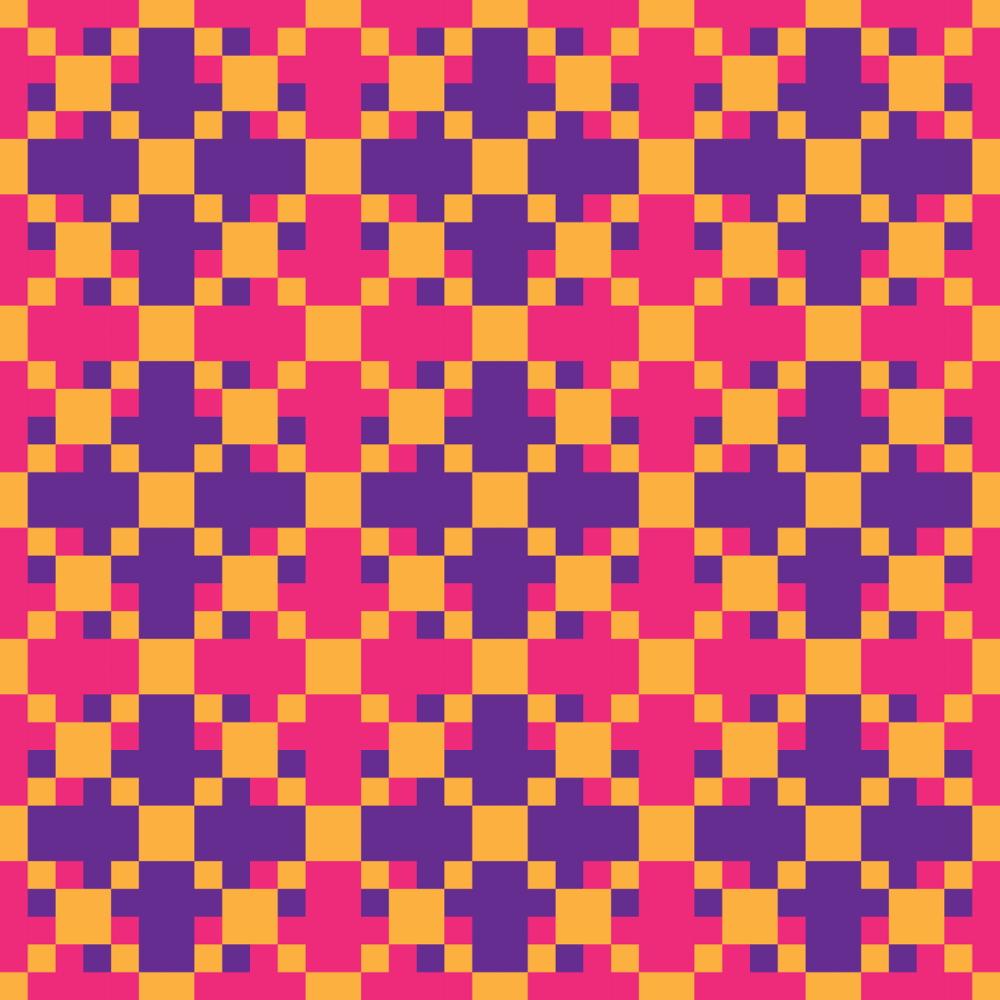
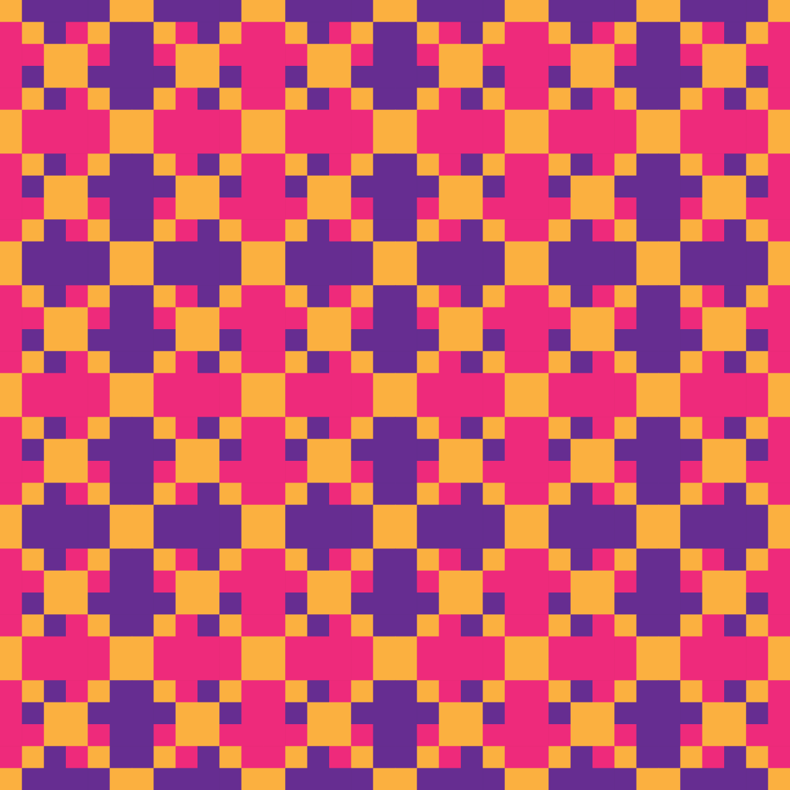
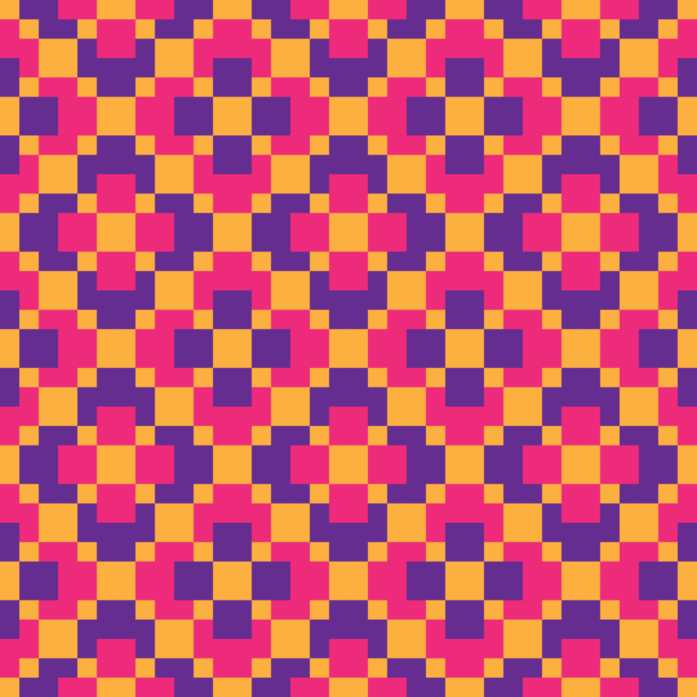
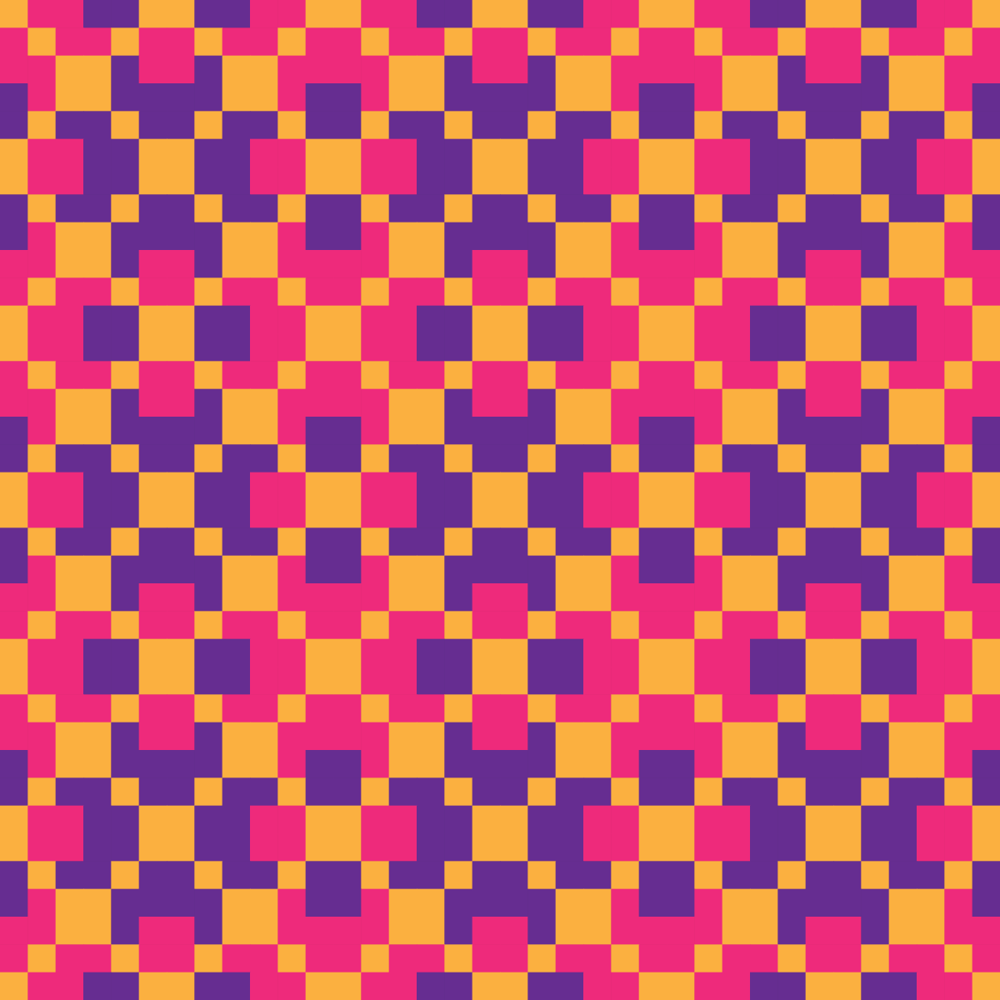
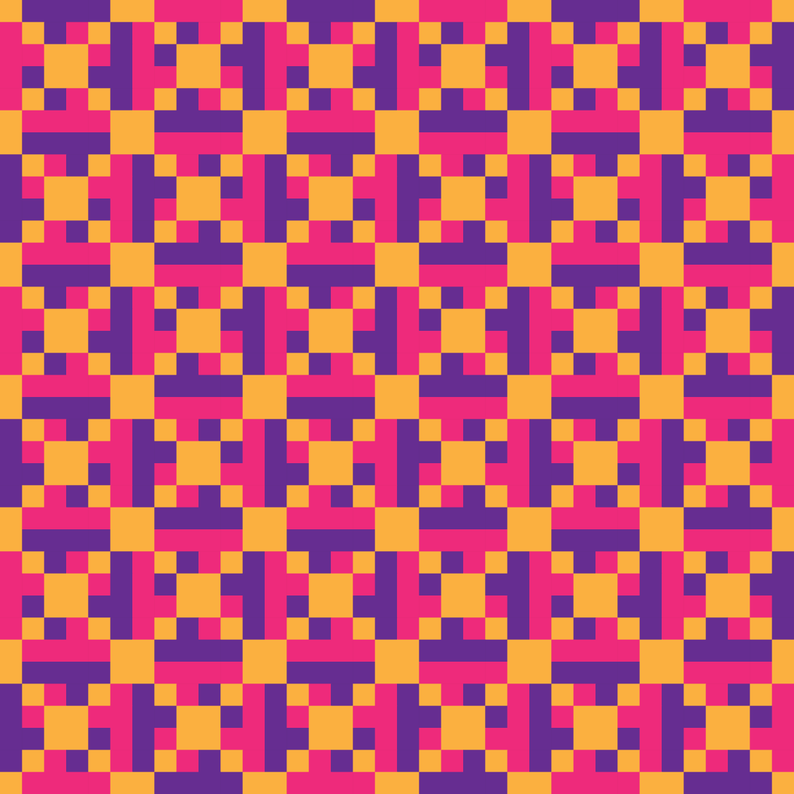
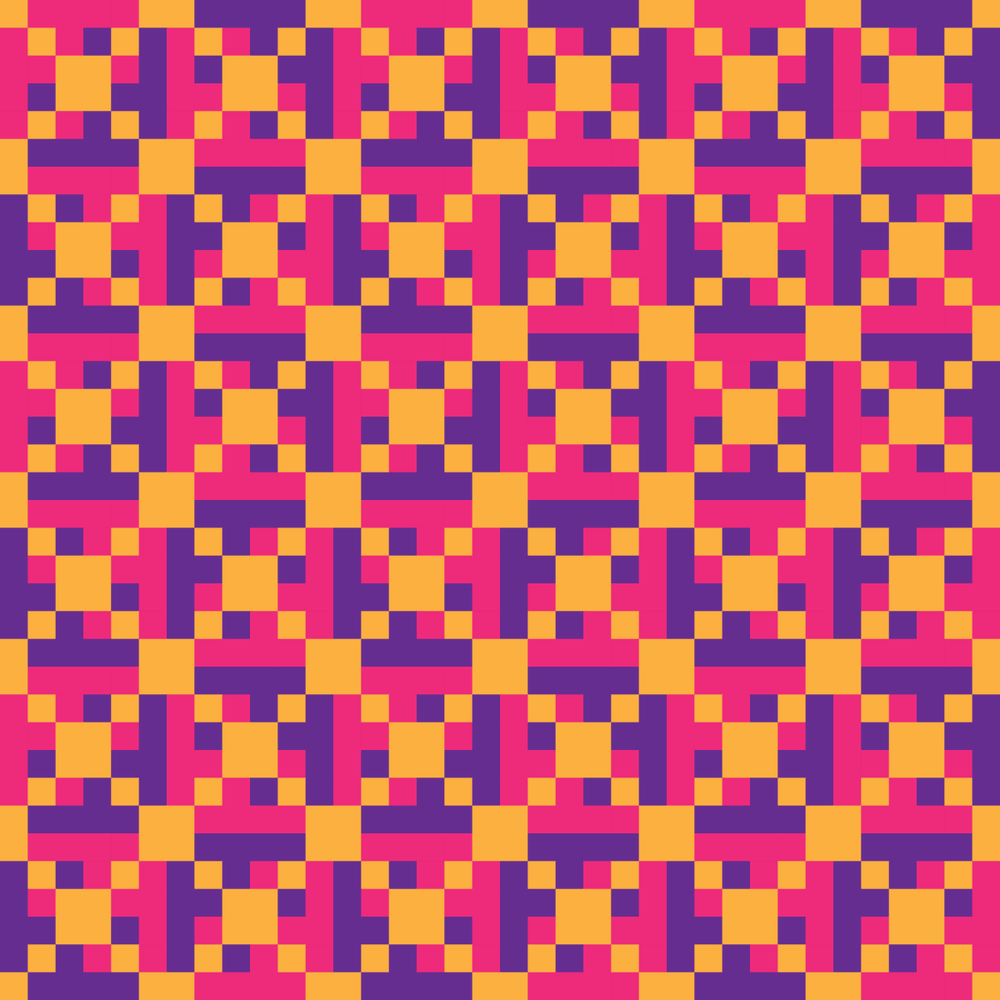
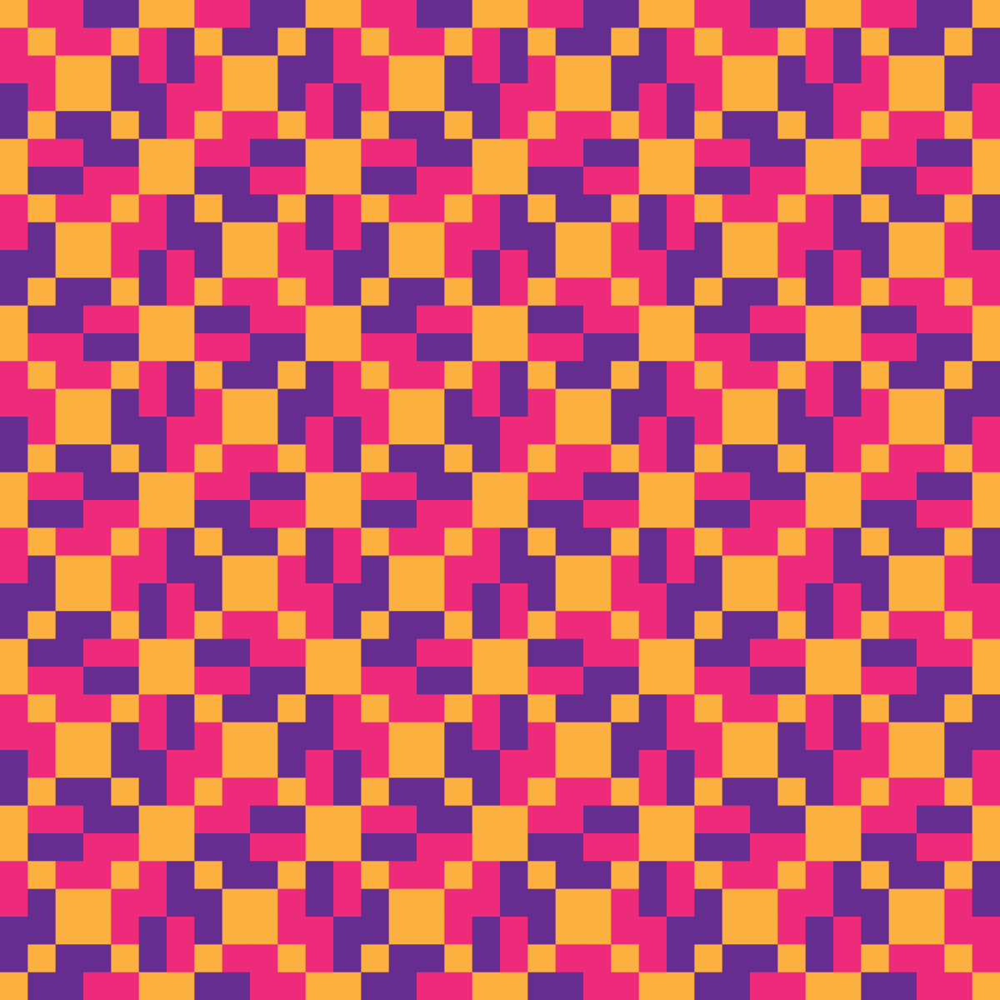
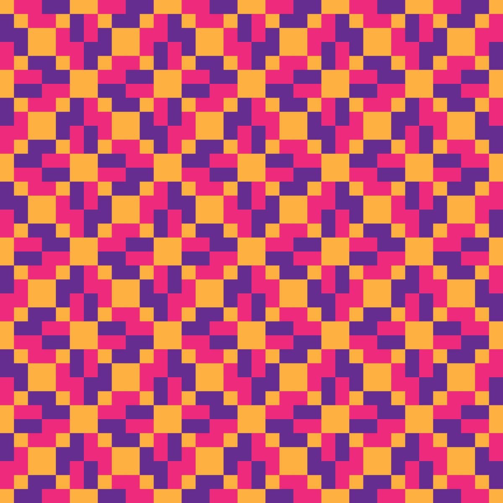

Other languages: Français · Español · ไทย
Hexagram 16 — Bi, Holding Together
Chronological no. 16 (binary-weight order) · King Wen no. (traditional) 8 · 比
By Anibal Edelberto Amiot — Updated October 1, 2026

the middle son
the mother
Upon the Earth, Water: the image of holding together. Water takes the shape of the ground, nestles into it, spreads without ever fighting it — union without friction, mutual support. This is the figure of natural alliance, one that is not forced but recognized. Thus the ancient kings gathered the distant kingdoms and honored their princes: lasting solidarity is never born of constraint, but of the mutual recognition of what each brings to the other.
The union of clans is knotted from below, like the warp thread. What holds together lastingly is woven in discretion, thread by thread, long before the structure becomes visible from outside. True solidarity is never decreed from above: it is built from the base, thread by thread, until it forms a weave that nothing can undo.
The six lines
At the base of the earth, emptiness closes over: what was still an opening begins to fill.
The receptive earth reaches its fullness: the silent welcome that carried the lower figure is about to assert itself.
At the threshold between earth and man, suppleness gathers weight: what once yielded by nature is about to harden.
In the listening of man, the hollow fills: the openness that received is about to assert itself.
At the sage's seat, fullness hollows out: the force that governed the figure from its center is about to invert.
At the summit, emptiness reaches its fullest extent and closes: the furthest opening turns toward its opposite.
Source: La Livrée d'Hermès, Anibal Amiot — chapter 7.1 (pp. 63–68). French version of this page.
For the notions used here — magic square, layer and casting, the Yi Jing — see the project lexicon.
The patterns of this hexagram
Eight 12×12 Jacquard patterns are generated from this hexagram, one for each admissible family of the system. Each has its own page: cell, tiling, recolourings and data.

Bases — YANG mutant
Bases — YANG
Pair of two — YANG + YIN mutant
Pair of two — YIN mutant + YANG mutant
Pair of two — YIN + YANG
Pair of two — YIN + YANG mutant
Triple — without YANG
Triple — without YANG mutantNeighbouring hexagrams
15 — Da Zhuang, The Power of the Great · 17 — Zhun, Difficulty at the Beginning
Hexagrams sharing a trigram
Same upper trigram (☵ Kan): 17 — Zhun, Difficulty at the Beginning · 18 — Kan, The Abysmal · 19 — Jie, Limitation · 20 — Jian, Obstruction · 21 — Ji Ji, After Completion · 22 — Jing, The Well · 23 — Xu, Waiting
Same lower trigram (☷ Kun): 0 — Kun, The Receptive · 8 — Yu, Enthusiasm · 24 — Cui, Gathering Together · 32 — Bo, Splitting Apart · 40 — Jin, Progress · 48 — Guan, Contemplation · 56 — Pi, Standstill